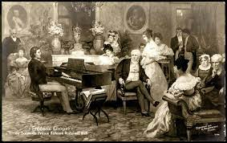

Frédéric Chopin
Frédéric Chopin nació en la aldea de Żelazowa Wola, a 60 kilómetros de Varsovia, en una pequeña finca propiedad del conde Skarbek, que formaba parte del Gran Ducado de Varsovia (voivodato de Mazovia, Polonia). Recibió el nombre de Fryderyk Franciszek Chopin.La fecha de su nacimiento es incierta: el propio compositor (y su familia) declaraba haber nacido el 1 de marzo de 1810 y siempre celebró su cumpleaños en aquella fecha.nota Pero en su partida bautismal figura como nacido el 22 de febrero. Lo más probable es que esto último fuese un error del sacerdote. Esta discordancia se discute hasta el día de hoy, aunque el 1 de marzo es la fecha generalmente aceptada.

En junio de 1832 se mudó a la calle Cité Bergère. Su prestigio comenzaba a extenderse no solo en París sino en toda Europa. Firmó un contrato para la publicación de su música con Schlesinger, unas de las editoriales de música más importantes de Europa; en Leipzig era publicado por Probst y luego por Breitkopf & Härtel, en Berlín por Karl K. Kistner y en Londres por Christian R. Wessel. Por ello, entre este año y 1835, estuvo extraordinariamente ocupado; además de las clases cotidianas y los recitales nocturnos, se abocó a componer febrilmente, acicateado por los editores que le adelantaban dinero para publicar sus piezas. De este período datan las Variaciones Brillantes Op. 12, el Rondó Op. 16, el Vals Op. 18, el Andante Spianato y Gran Polonesa Brillante Op. 22, el Scherzo n.º 1, las Mazurcas Op. 24 y las Polonesas Op. 26.